Everything Memoria can do, how to use each tool, and exactly what each one will — and won't — change on your PC.
Unreleased updates after 1.415 pagesLight & darkWorks offlineWindows 10/11
Getting started
Start Memoria: run run.ps1 (first run installs what it needs) or open Memoria.exe from the built
app folder. Existing executables must be rebuilt to include the unreleased changes described here.
Click Choose photo folder… and pick the folder that holds your photos (for example Pictures or a
backup drive). Or click Try it on a sample library to explore safely with generated photos.
Memoria reads the library in the background: it notes every file, reads photo dates and camera details, and makes
thumbnails. The first time takes a few minutes for a large library; afterwards it only looks at new or changed files.
Start from Overview — each card tells you what that tool would do for this library. Click
Check everything to run every finder in one go (it only reads).
You can also drag a folder onto the window to open it as a library.
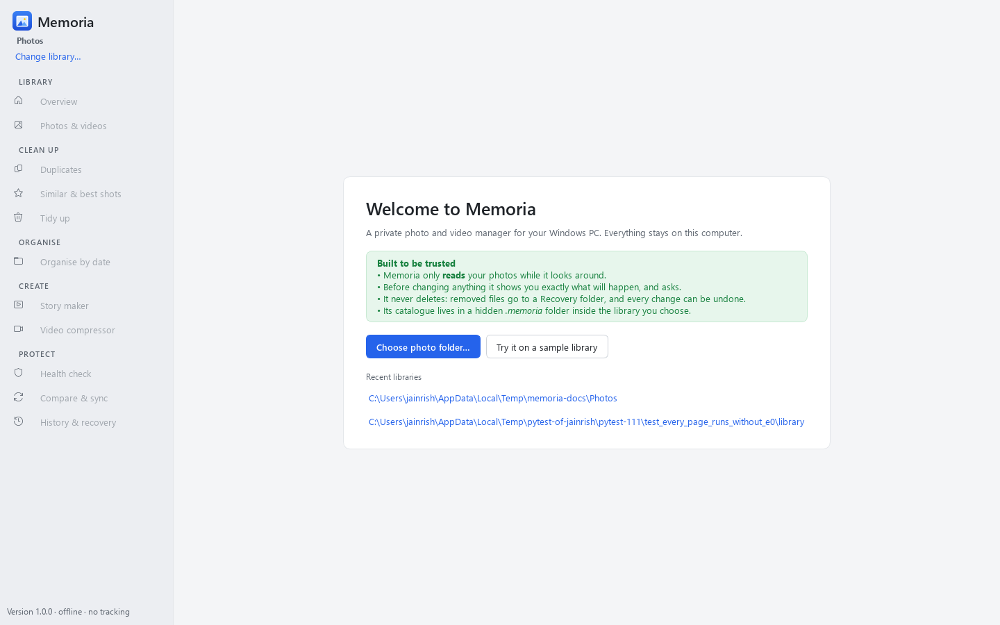
The welcome screen explains the safety promises
before you choose a folder.
Memoria remembers the last library and page and reopens them next time. Recent libraries are listed on the welcome
screen; use Change library… in the sidebar to switch.
Safety and its limits
Recovery is not a backup. Clean-up moves originals to Recovery until you explicitly
empty it. File moves, copies and generated outputs are journaled for Undo. Undo may delete an unchanged generated
copy; clearing albums, people or health baselines is not undoable. Keep a separate backup.
Looking is harmless. Finding duplicates, similar photos, tidy-up items, organise plans, health checks and
comparisons only read files.
You see the list first, then confirm. A dialog states exactly how many files will move and where.
Duplicate Quick remove can skip group confirmations after explicit session consent; bulk Apply and
Empty Recovery always keep their confirmations.
Changed files are skipped. If a file changed after you reviewed it, Memoria leaves it alone and tells you.
Nothing is overwritten. If a name is already taken, the moved or copied file gets a number, e.g. IMG_1234 (2).jpg.
Where Memoria writes: a hidden .memoria folder inside your library (catalogue, thumbnails,
History and Recovery), and the output folders you choose for stories and compressed videos.
One window per library. A library can only be open in one Memoria window at a time, so two windows can
never change the same files at once.
Unreadable is not deleted. An unreachable scan root aborts the scan; inaccessible files/folders retain
their entries. Interrupted file operations may already have completed steps; check History before retrying.
Undo keeps everything. Undoing a change restores files together with their thumbnails, dates and health
fingerprints, except metadata you deliberately cleared using Storage & reset.
Verified Undo: edited copies and legacy copies without a recorded fingerprint are left in place for manual review.
Nothing leaves your PC. No account, no upload, no tracking.
Check everything
One button on Overview runs every finder in sequence — reading the library, exact duplicates, similar photos,
similar videos, blurry photos, leftovers and the date-folder plan — with a single progress bar
("Step 3 of 6 · Finding similar photos").
It only reads; nothing in your library changes.
The sidebar then shows a count badge on each tool with something to review (e.g. Duplicates 14).
The results are reused: opening Duplicates, Similar, Tidy up or Organise shows them instantly — until anything
in the library changes, after which the page looks again.
Overview
A dashboard for the open library.
Tiles: number of photos and videos, total library size, and the years it covers.
Safety banner: how many files are in Recovery, why it is not a backup, and where to check file health.
Tool cards: one sentence per tool about this library — e.g. "25 files might have exact copies", "12 photos look
blurry", "5 leftover files, 2 empty files and 3 empty folders can be tidied away", "Never checked". Cards worth
visiting have a blue Open button.
Rescan library: look again for new, changed or removed files (read-only).
Overview of the sample library.
Photos & videos
Browse the whole library by date.
Available while indexing. Completed entries appear periodically; search, filters,
sorting, paging and the viewer work before the entire library finishes. Unprocessed entries are hidden rather than
shown as blank photo tiles. Previously analysed cache entries can be viewed during a metadata refresh.
The banner shows ready/pending counts. A selection, scrolled position or later page holds the current view so it
does not jump; Update view loads new results, clears selection and returns to page 1. Utilities, including
cleanup, editing, copying/moving and album changes, remain locked during active indexing. Cancel keeps completed
analysis; F5 resumes. File-count progress does not imply equal processing time for photos and videos.
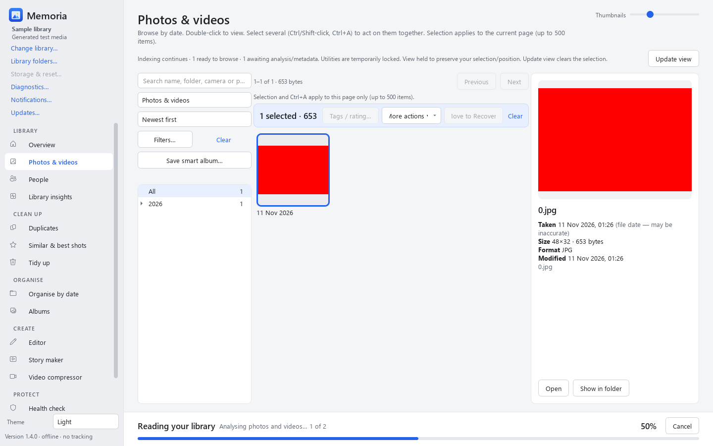
A completed photo is available before the next file finishes. Utilities stay disabled, and the selected preview is held.
Timeline on the left: All, then years and months with counts. Click to filter.
Search literal text in names, folders, camera models and named people. Type filters include photos/videos,
individual media types, Problems, other files and all files.
Sort: dates, size/name/format, modified time, resolution, video length, estimated overall bitrate, FPS,
codecs, camera/lens, ISO, f-number, shutter time and focal length. Numeric options have both directions;
unknown/inapplicable values sort last. Captions follow the chosen sort.
Filters…: folder with optional subfolders, format, inclusive capture-date range, minimum/maximum MiB,
GPS availability or a map-selected area, detected faces and named people. Run Find people first for face filters.
Metadata tabs: Dimensions & video adds displayed orientation, minimum width/height, MP, duration in
seconds, overall Mbps, FPS and codecs. Camera & exposure adds camera/lens and ISO, f-number, exposure seconds
and actual focal-length ranges. Missing values are excluded only for fields you constrain.
Preview on the right: the photo, when it was taken and how Memoria knows (camera, video metadata, file
name, or file date — may be inaccurate), size and resolution, camera, GPS coordinates, its location in the library, and
any problem in plain words.
Double-click a photo for the built-in viewer; videos use the default player. Right-click for additional actions.
Select several photos (Ctrl/Shift-click) and press Add N to Story maker.
Thumbnail size: the Thumbnails slider, or Ctrl + mouse wheel over the grid.
Paging: at most 500 files are loaded per page. Previous/Next navigate results; the header shows matching
count and total size. Changing filters clears the current selection. Clear leaves a chart's filter selection.
The Problems filter shows how many photos and videos can't be opened.
Batch actions
Select one or more items (Ctrl/Shift-click, or Ctrl+A for the current page only) and a selection bar appears
with count and size. Unseen pages are not included in batch actions:
Action
What happens
Undo
Move to Recovery (or Delete key)
Selected items move to Recovery after a confirmation that shows their thumbnails.
Yes
Copy to folder…
Verified copies into any folder (e.g. a USB stick). Name clashes get a number; nothing is overwritten.
Removes the copies, if unchanged
Move to folder in this library…
Moves files to another folder of the same library; dates, thumbnails and fingerprints move with them.
Yes
Add to Story maker
Sends the selected photos to the Story maker, in order.
—
Compress videos
Opens the Video compressor with the selected videos ticked.
—
Show in folder
Opens Explorer at the first selected item.
—
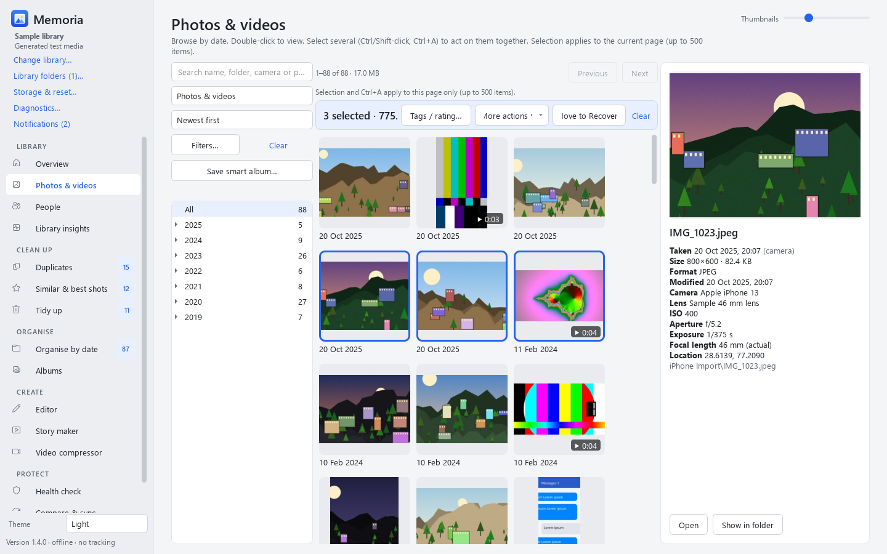
Three photos selected: the selection bar offers
Move to Recovery and More actions. Videos show a ▶ duration tag.
Viewer
Double-click a photo (or press Enter) to view it large. Use ← / → (or Space / Backspace) to move through the photos
currently shown, Open in default app, Show in folder, and Esc to close. Videos open in your default player.
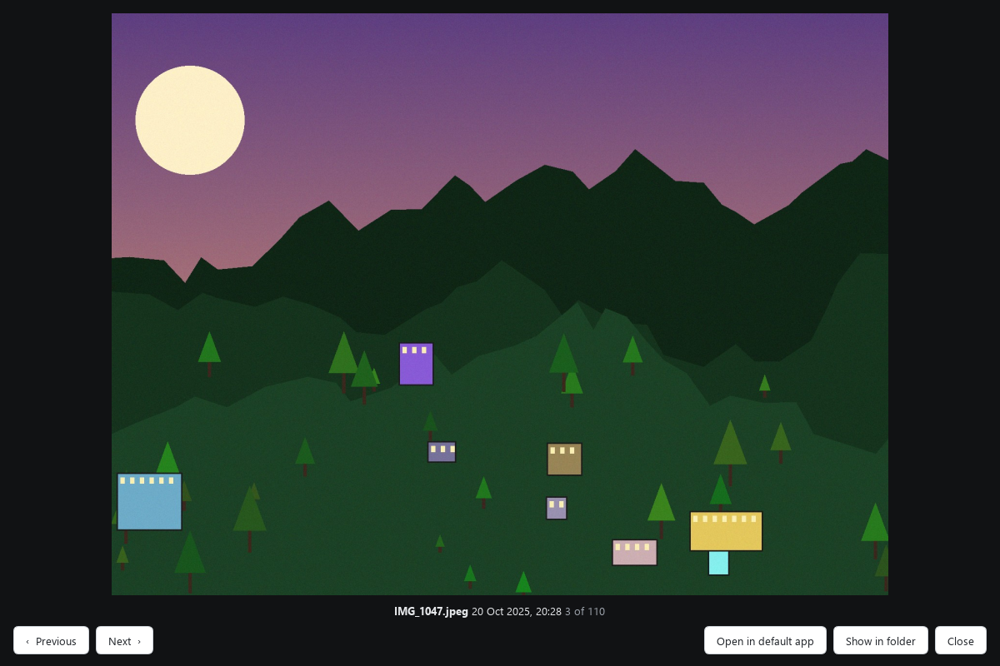
The built-in viewer.
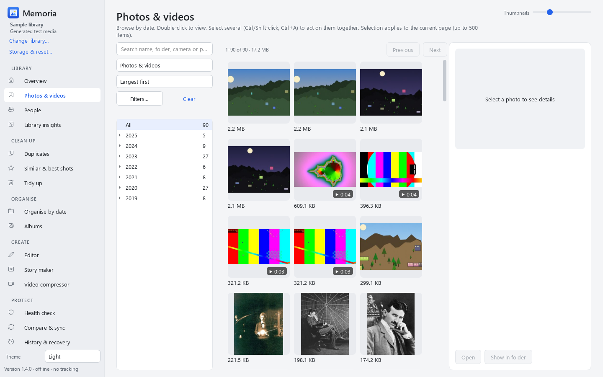
Size sorting makes large files easy to review without reading their contents again.
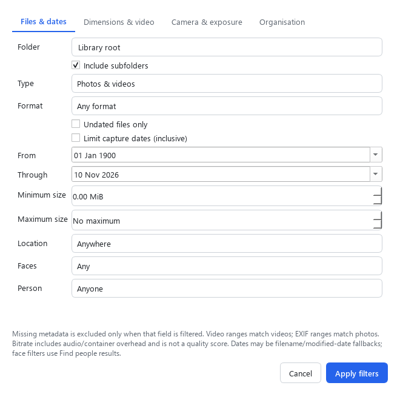
Filters combine rather than replacing one another. Clear a selected map area before choosing files without GPS.
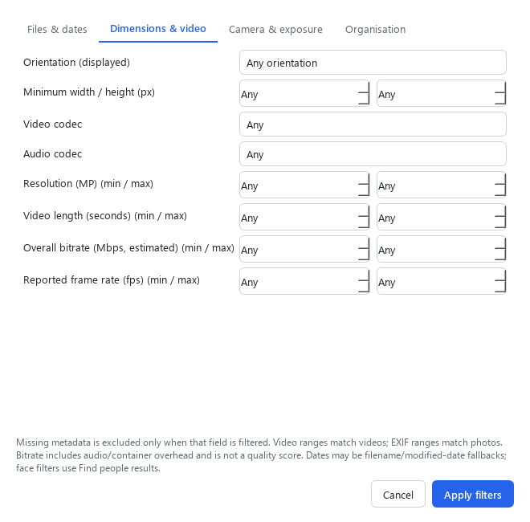
Inclusive ranges with explicit units. Resolution uses pixel count, not a quality judgement.
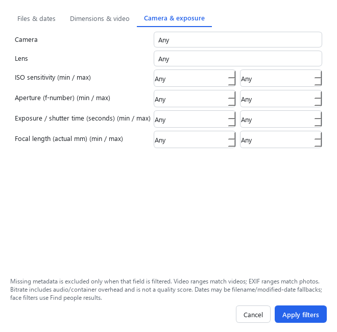
Photographic fields are available only when present in standard EXIF metadata.
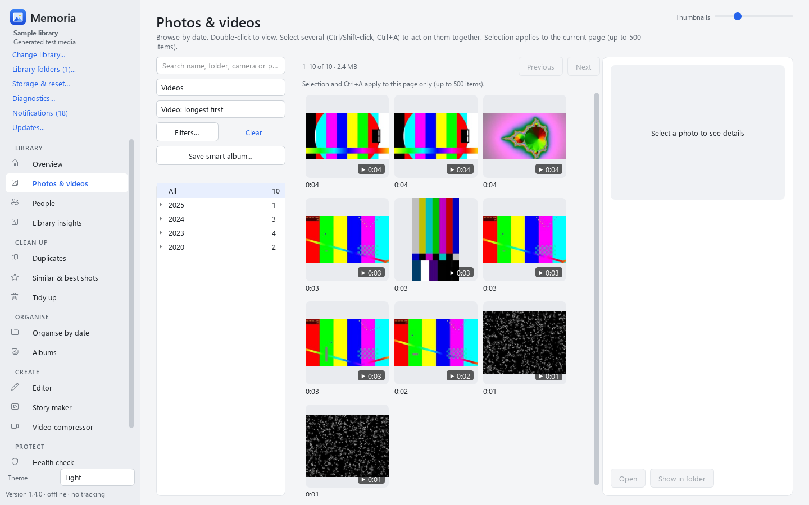
Length sorting with reported frame rate, codecs and estimated overall bitrate in the preview.
Opening an older catalogue upgrades it to schema v7. Catalogues from before v6 refresh media analysis once;
v7 itself only adds saved duplicate keep choices and does not repeat that analysis. This reads originals in place,
preserves identities and health fingerprints, and resumes after cancellation. Older files in Recovery or missing
records refresh when restored. The preview details scroll when many metadata fields are available.
Interpretation: bitrate is file bytes × 8 ÷ duration, including audio/container overhead, not a video-quality
score. FPS is reported and may be approximate for variable-frame-rate files. Focal length is actual mm, not a 35 mm
equivalent. Aperture is an f-number; exposure is seconds (short exposures display as fractions).
Library insights
Read-only charts of the last indexed catalogue. Choose a folder or apply the same filters as Photos & videos.
Use F5 after changes outside Memoria. Counts exclude Recovery and the cache; sizes are logical file sizes, not allocated disk clusters.
Storage
Bars show immediate subfolders, files directly in the selected folder, and file formats. Every matching file is
counted once. Click a subfolder to drill down, a format to browse its files, or Browse selected folder.
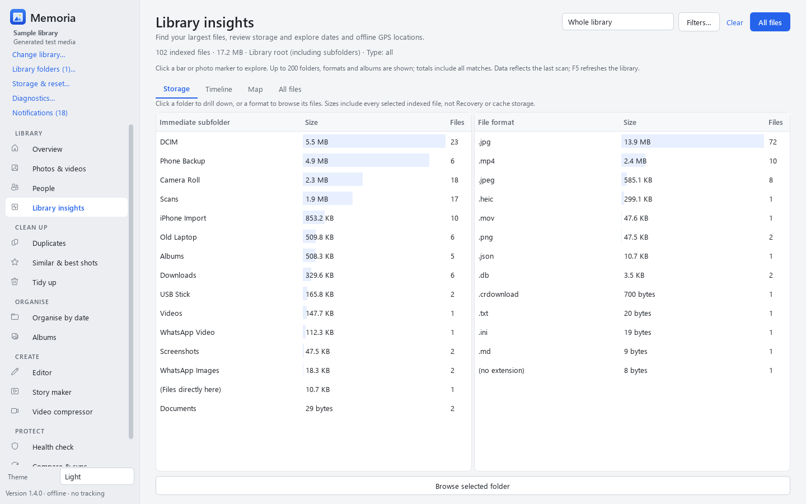
Folder-wise and format-wise counts and sizes.
Timeline and album links
Click a year, then a month, then a day. A day opens its files; Browse this period opens the selected
year/month. Saved albums containing matching files are linked beside the chart; no albums are created automatically.
Undated files are excluded. Dates can come from camera metadata, filenames or modified dates, so check date sources.
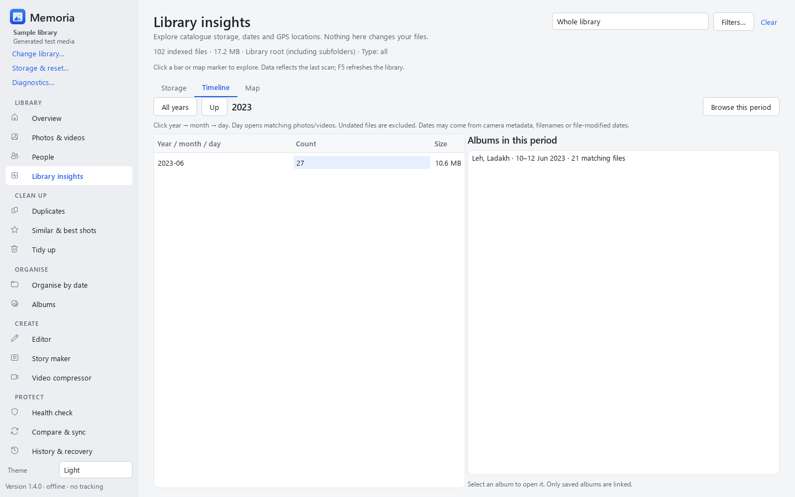
Drill down through dates and open an existing album directly.
Offline GPS map
Auto starts with India for Indian coverage or an empty map, and switches to world coverage when coordinates fall
outside the bundled approximate India outline. India/World/Auto reset the view. Scroll with a mouse or touchpad,
or use + / − to zoom; drag to pan. With keyboard focus on the map, + / − and arrow keys also work.
Zoom/pan redraw immediately and stay available while photo clusters refresh. Click a photo marker or its
keyboard-accessible list entry to browse its files; dragging a marker does not open it.
Bundled GeoNames data adds country, city/town and accompanying state/region names. Zoom in to reveal more
settlements; labels are prioritised and spaced to avoid overlap. Coverage is mainly towns/cities with 15,000+
residents, not every village, street, address or landmark. Region names accompany settlements; state boundary
polygons are not drawn. Nearby names in the photo list describe approximate cluster centres, not exact addresses.
No GPS is uploaded and no online tiles are fetched. Missing/invalid GPS is not plotted. The Natural Earth outlines
are approximate and not authoritative country geocoding; borders and coastlines can affect automatic coverage.
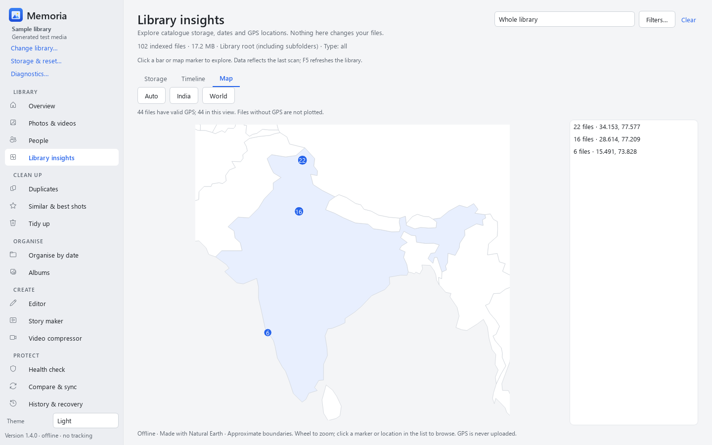
India view with offline place labels, zoom/pan controls and catalogue GPS clusters.
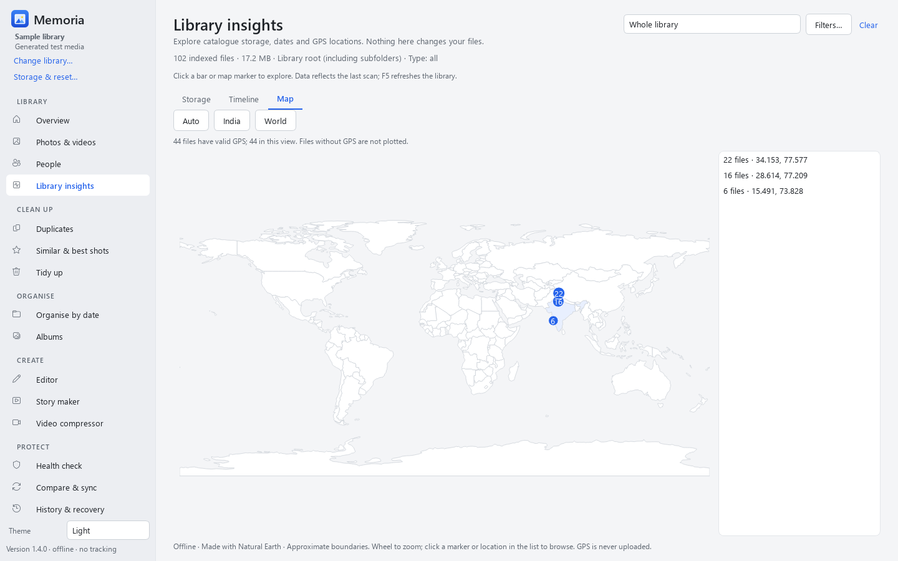
World view is also available manually. The sample library uses generated locations.
People
Finds the faces in your photos, groups the ones that belong to the same person, and lets you name them — then you can
see every photo of someone, search for them in Photos & videos, or make an album of them.
Private by design. Faces are found and recognised on this computer by two small open
models. Face positions, their 128-number "signatures" and names are stored only in this library's catalogue. Nothing is
uploaded, photos are never changed, and More → Forget all face data… deletes all of it.
How to use
Click Find people. Every photo is checked once (a fraction of a second per photo, using all processor cores);
later runs only look at new or changed photos. A progress bar shows how far it has got, and Esc cancels.
The list shows each group of look-alike faces with how many photos it appears in. Select one to see its faces and
photos.
Click Name… and type a name. Choosing a name that already exists joins the two groups. New photos of a named
person are matched automatically from then on.
If two groups are the same person, use Same person as…. If a face doesn't belong, select it and click
Not this person — it is never matched to that person again.
Find look-alikes searches the whole library for faces like the selected one, most alike first — handy for
finding someone the grouping missed.
Hide puts away groups you don't care about (strangers in the background, statues). More → Unhide hidden
groups brings them back; Show faces seen in only one photo lists one-off faces too.
Make album saves the photos shown as an album.
Once people are named, type a name in the Photos & videos search box to see all their photos, filtered by date
and type like any other search.
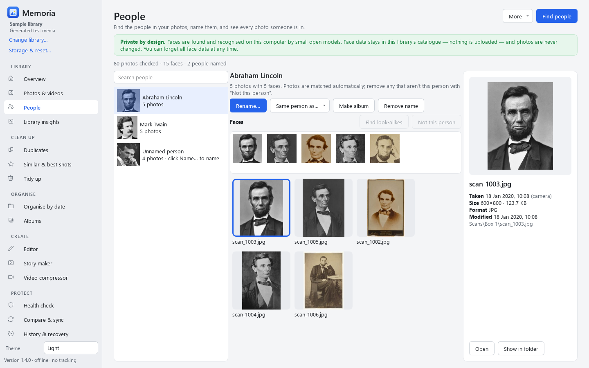
Two people named; a third group waits for a name.
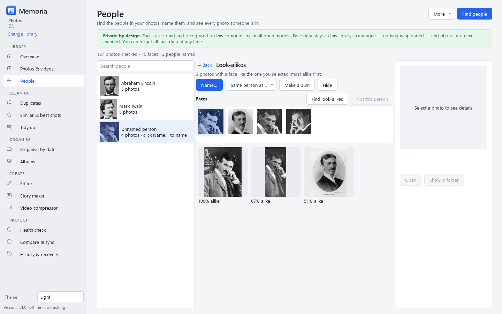
Find look-alikes: photos with a face like
the selected one, most alike first.
Good to know: faces are found in photos, not videos. Very small faces (under about 20 pixels in a 1600-pixel view),
profiles and faces partly covered may be missed; photos of the same person decades apart may form separate groups —
join them with Same person as….
Duplicates
Finds exact copies — files with identical content, whatever their names or folders — and whole duplicate
folders. Typical sources: phone backups, an old laptop copied onto a drive twice, "(1)" downloads, copies made while
reorganising.
How to use
Click Find duplicates. Equal-size candidates pass through sampled hashes, then full-content hashes.
Leftovers in matched folders are also fingerprinted to make explicit all-folder removal safe.
The tiles show duplicate folders, extra file copies and the size of the bulk plan.
Moving to Recovery does not itself free disk space.
Duplicate folders are listed first. A folder is listed when another folder holds exactly the same files,
or all of its files and more. Sub-folders are included and names or layout don't matter (leftovers like
Thumbs.db and empty files are ignored). Only the highest folder is shown: if all of "Old Laptop" is a copy of
"Albums", you see "Old Laptop" once — not every album inside it. Each entry shows its duplicate size.
Select a folder entry to see a table of the folders involved — total size, number and size of photos, number and
size of videos, other files and sub-folders — and the files inside. For identical folders, select one and click
Use as bulk keeper to keep it in the bulk plan. When an original-looking folder sits inside a backup folder, the entry is
shown but not ticked.
Duplicate files follow: copies not already handled by a folder group. KEEP marks files left in place
and MOVE marks planned removals. The default still prefers an original-looking copy;
hover a thumbnail for its reason.
To change the copy kept by bulk Apply, select it and click Use as bulk keeper. This changes the plan only.
Remove 1: select the exact copy or folder, then click Remove 1. Confirm to move just that item to Recovery;
other marked groups are not included. No second Apply click is needed.
Remove both / Remove all (N): confirm to move every shown member of the current group to Recovery.
For folders, this is available only for identical groups, never a containing folder that may hold unique files.
Keep both / Keep all (N): leave every shown member untouched and remember the choice.
Unchanged kept groups are hidden by default. Show previous choices reveals them unchecked.
Tick a revealed group or choose a removal to replace that keep decision.
Unticking is temporary exclusion for this review. Include all uses suggested removals, not previous
Remove-all choices, and does not override remembered keeps. Include none excludes everything for this review.
For a bulk cleanup instead, click Apply marked groups…, review the combined plan, then confirm.
This always asks, even with Quick remove enabled.
Remove both/all can remove the last copy from the library. It requires a separate checkbox
acknowledgement, either for that action or when enabling Quick remove. Files go to Recovery, not permanent deletion;
Undo remains available only while Recovery is intact.
Review the result and your separate backup before ever emptying Recovery.
Optional Quick remove
Enable Quick remove: skip confirmation popups and acknowledge the warning once. Remove 1 and
Remove both/all then act immediately on the current group, without more confirmation popups. A visible warning stays
on while enabled. File checks, changed-file/error feedback, Recovery and Undo remain active; bulk Apply, Empty Recovery
and other tools keep their confirmations. Quick remove is not saved and starts off in every new library window.
Untick it at any time to restore group confirmations.
After removal, duplicate results refresh. Removing one of two copies makes that group disappear; removing one
of three leaves a two-copy group. Kept groups remain visible only when Show previous choices is enabled.
Keep decisions are tied to the reviewed group members, locations and file signatures, not just filenames.
New members or detected changes require review again. Folder choices take precedence over individual review of the
files inside those folders. Completed removals are listed in History; removal choices are not replayed after rescanning.
Storage & reset can clear saved keep choices explicitly.
What changes
Selected copies move into Recovery, keeping their folder structure there. Normal removal checks a surviving copy.
Explicit Remove both/all has no survivor requirement, but each reviewed file is still checked against its recorded
content hash and file information. Changed files are skipped.
With normal folder cleanup, reviewed contents go to Recovery; meaningful files are checked against an identical copy that
stays in the library, and the emptied folders are then removed. If a file in it has changed, or something new has appeared
in the folder, that file and its folder stay where they are. Undo puts the whole folder back.
For explicit removal of all identical folders, only files captured in the review are included, including fingerprinted
leftovers. New files are not added to that plan. Unreadable/unverified contents prevent this choice from being planned.
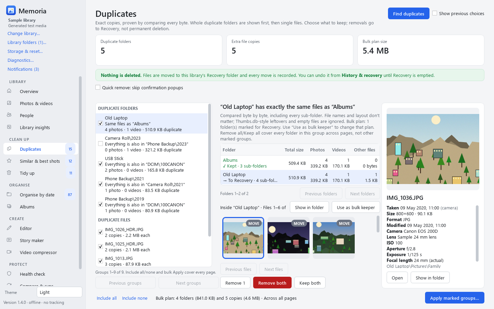
"Old Laptop" holds exactly the same
files as "Albums" — shown once, at the top folder, with sizes and counts of photos and videos for each folder.
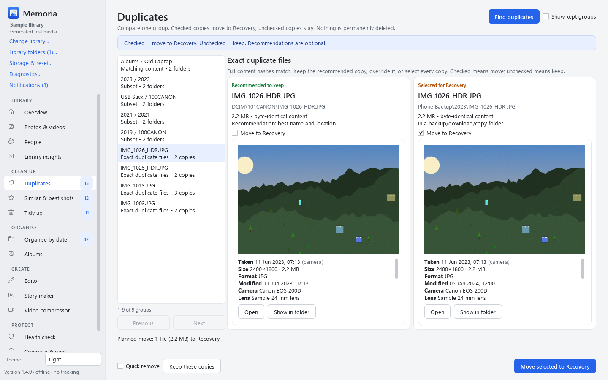
Large 6 MB duplicates are handled correctly (the
old command-line tool skipped every file over 1.28 MB).
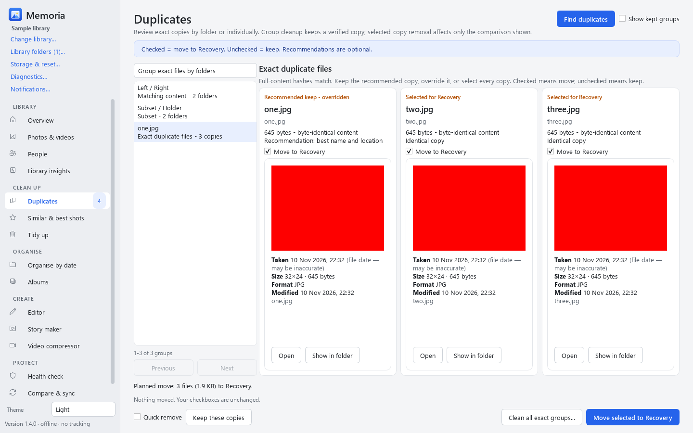
Remove buttons act on this group only. Bulk keeper and Apply marked groups are separate plan controls.
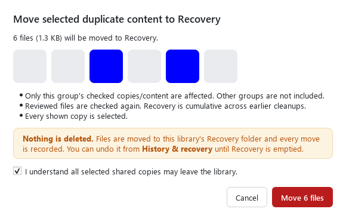
With Quick remove off, removing every shown copy requires acknowledgement for that action.
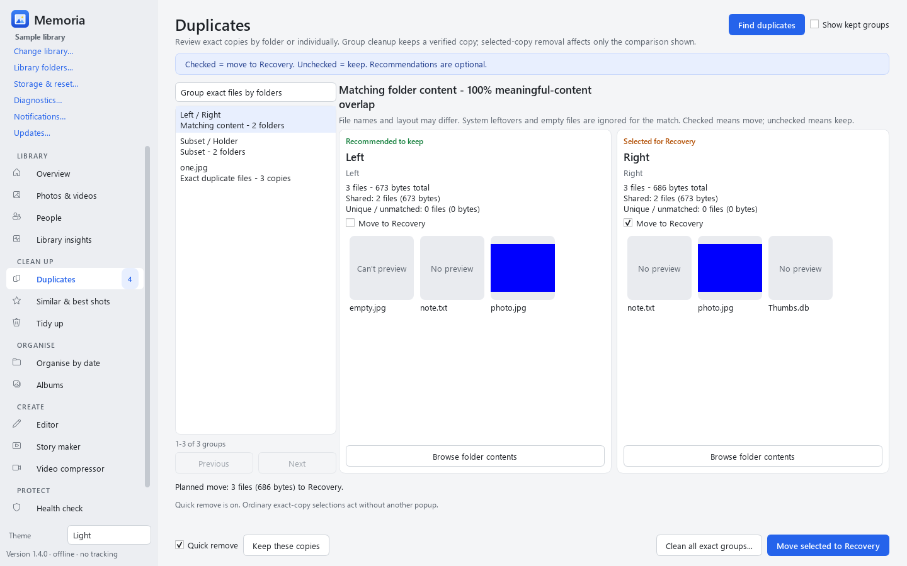
Quick remove requires initial consent and is never remembered for a new library window.
Similar & best shots
Groups photos that look the same but aren't byte-identical: bursts, retakes, resized or recompressed copies such as
WhatsApp forwards — and picks the best one.
How the best pick is chosen
Signal
What it means
Weight
Sharpness
Fine detail measured at the same size for every photo, so small copies can't look sharper.
Most important
Exposure
Penalises very dark/bright photos and clipped highlights or shadows.
Second
Faces
More visible faces scores higher (only used when the group has faces).
Small
Resolution
Larger originals beat downsized copies.
Small
The reason is printed under every photo — e.g. "Best pick: sharpest (20.1× the softest), best exposure" and
"blurrier (25% of best sharpness)", "smaller (800×600)".
How to use
Click Find similar photos. Groups appear on the left, labelled Burst (taken seconds apart) or Similar.
The suggested best photo has a green BEST badge. Nothing starts ticked, in either the photo or video tab.
Click tick boxes to change what moves. Select a photo and click Make this the best pick to switch.
Use Keep only best in every group or Untick everything for all groups at once.
Click Move selected to Recovery. A group can never be emptied completely — the best pick always stays.
Exact copies are not repeated here (they belong to Duplicates), and screenshots taken a second apart are not mistaken
for bursts — bursts require real camera timestamps.
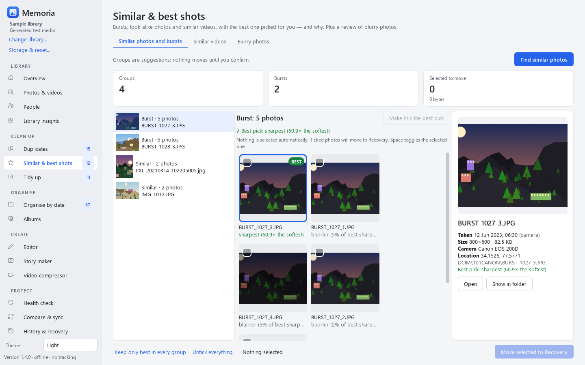
A five-frame burst; the sharp frame is the best pick.
Similar videos
The Similar videos tab finds copies of the same video whose bytes differ — compressed or resized copies
(WhatsApp forwards, exports) and slightly trimmed copies. Memoria compares eight frames spread across each video and
the video lengths. The best copy is picked by resolution, then quality (bitrate), then length, with the reason shown
("highest resolution (1280×720), highest quality (0.8 Mb/s)"). The first search reads a few frames from each video;
results are remembered, so later searches are quick.
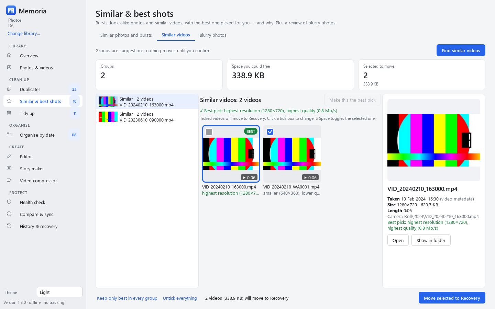
An original and its WhatsApp-sized copy.
Blurry photos
The Blurry photos tab lists photos with little fine detail. Choose a sensitivity — Only very blurry, Blurry
(recommended) or Slightly soft too. Nothing is ticked until you choose, because night shots, fog or intentionally
soft photos can appear here. Tick the ones you don't want and click Move ticked to Recovery.
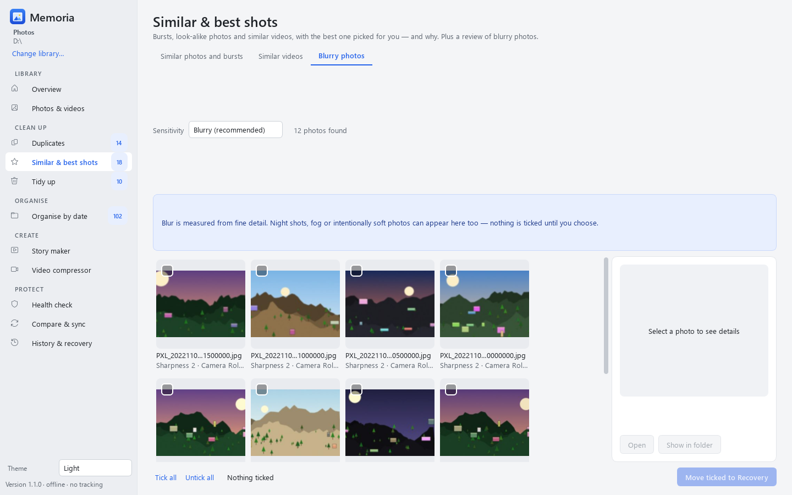
Each photo shows its sharpness score and folder.
Tidy up
Clears out leftovers that operating systems and apps scatter through photo folders. Items are grouped by category with
counts and sizes; expand a category to see each file.
Apple .AAE files are protected. These sidecars can preserve Apple photo-editing instructions.
They are excluded from Tidy up, even if empty; a protected-file count is shown instead. Keep them with the photos.
Memoria does not apply their Apple-specific edits, and this protection does not add sidecar or Live Photo pairing
to other tools.
Folders with nothing in them (or nothing once the above is gone)
Yes
Photos and videos with analysis errors
Codec, access or file problems; not proof of damage
No — review first
Non-photo files
Documents and other files mixed into the library
No — review first
HEIC/HEIF photos are supported. Healthy photos are not cleanup candidates. If one appears under analysis
errors, select it to read the recorded technical error in the preview. A missing codec, unsupported variant or
access problem can resemble a damaged file. Check the original in a compatible viewer and your backup before removing
anything. These are stored scan results, not an automatic retry or repair.
Click Tidy selected. Files go to Recovery; empty folders are removed only if they are still empty at that moment, and
Undo recreates them.
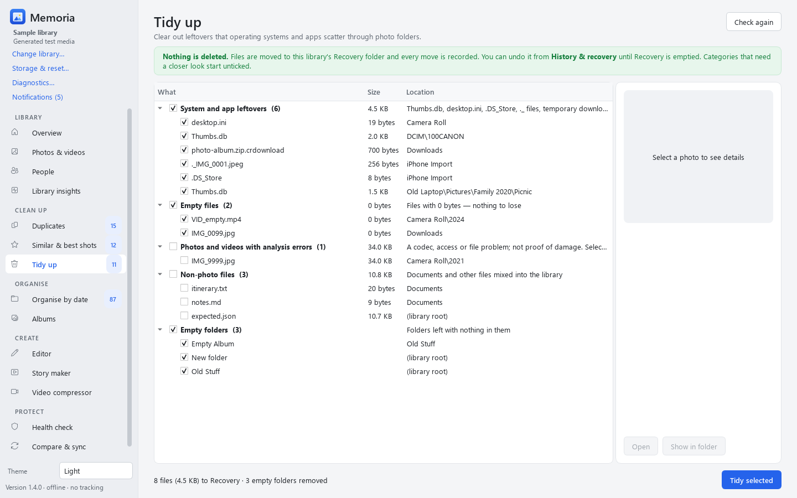
Risky categories start unticked.
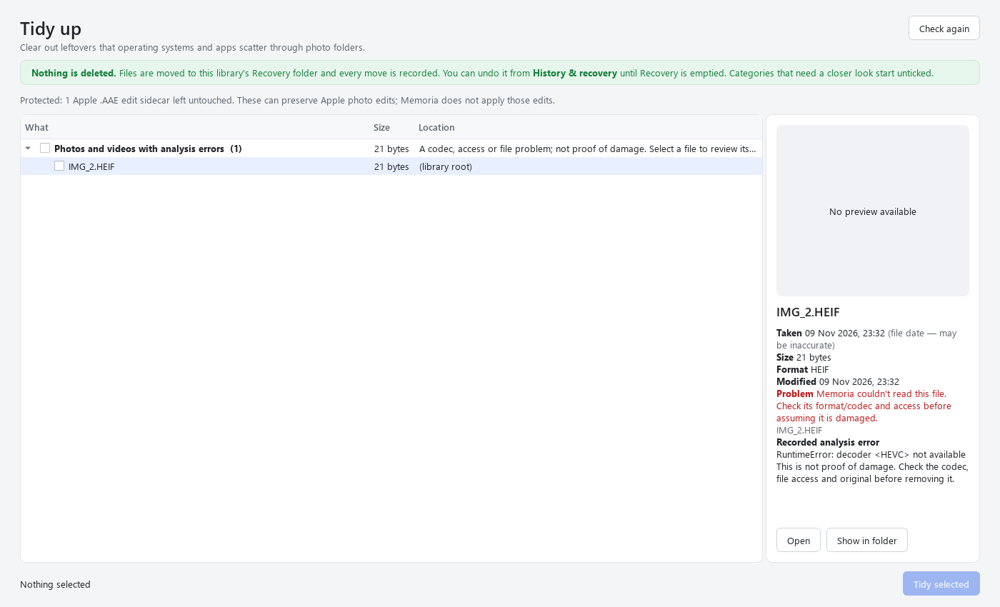
Generated test example: .AAE files stay protected, while an analysis error remains unticked and can be inspected.
Organise by date
Files photos and videos into folders by the date they were taken.
Options
Folder layout:2024\2024-07, 2024\07 July, 2024\2024-07-21 or 2024.
Also move files whose only date is the file's modified date — off by default because copying a file usually
resets that date.
Remove folders that end up empty — on by default (parent folders too, if they empty out).
How to use
Click Preview changes. Tiles show how many files will move, how many are already in place and how many were
skipped because their date is uncertain.
The plan is a tree of new folders; expand one to see each file, where it is now, and the date used and its source.
Untick folders or files you want to leave. Click Move files.
Dates come from the camera (EXIF) first, then the video's metadata, then a date in the file name
(e.g. IMG_20210314_101500.jpg, WhatsApp Image 2022-08-01 at 10.15.30.jpeg, Screenshot 2024-02-10 101010.png).
Names are kept; a number is added only when the destination already has a file with the same name.
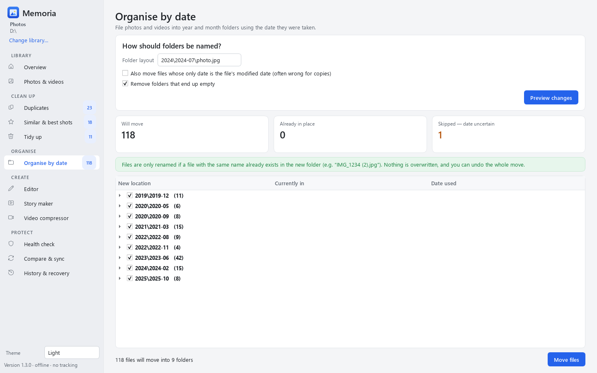
The plan before anything moves.
Albums
Groups photos and videos into albums without moving or copying anything — an album only records which items belong
to it, so a photo can be in many albums and deleting an album never touches its photos.
Make albums automatically
On the Make albums tab, choose how to group, click Suggest albums, review, and save the ones you want:
At least is the minimum number of items in each suggested album, not the number of videos.
When Include videos is checked, photos and videos count together. Suggestions do not create saved albums until
you click Save albums.
Group by
How
Named like
Events & trips
Photos taken close together become one album; a pause longer than the set time
(8 hours by default) starts a new one. A trip — photos in one place over several days — stays together through the
nights (up to 3 days between photos).
"Leh, Ladakh · 10–12 Jun 2023", "25 Dec 2019"
Places
One album per town or region, across all years. Only photos with a location are used.
"Delhi", "Goa"
People
One album per person named on the People page.
"Abraham Lincoln"
Place names come from a list of world towns bundled with Memoria (GeoNames) — locations are never looked up online.
Screenshots, damaged files and extra copies of exact duplicates are left out. Double-click a suggested name to change
it; suggestions you have already saved are shown unticked.
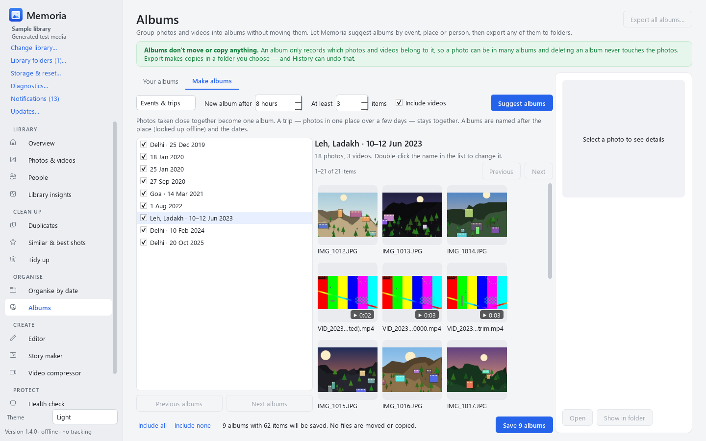
A three-day trip in one place becomes one album, named
after the place.
Your albums
Rename…, Delete album… (the photos stay), Remove from album and Use as cover.
Add photos from Photos & videos: select them, then More actions → Add to album… (or right-click). Pick an
album or type a new name.
Export… copies one album into a folder you choose; Export all albums… copies every album, each into its own
folder named after it. Copies are checked byte for byte, nothing is overwritten, and History can undo the export.
Exporting into the library itself is possible but warned about, because the copies would show up as duplicates.
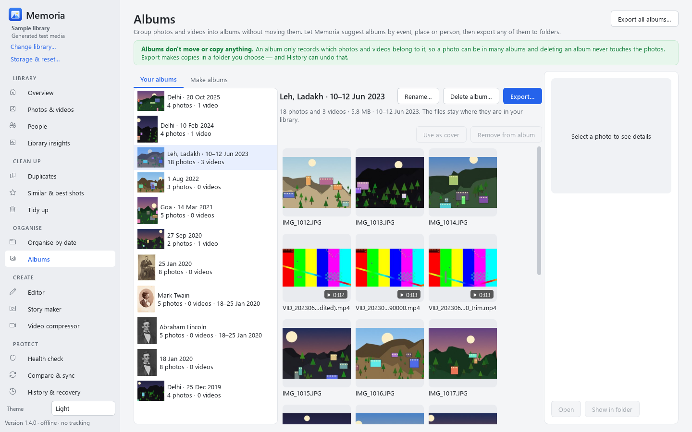
Saved albums with their dates, counts and contents.
Editor
Simple, safe editing for photos and videos. Originals are never changed: every result is a new file next to the
original (e.g. IMG_1234 (edited).jpg, VID_0042 (part 1 of 3).mp4) or in a folder you choose, existing files
are never overwritten, and each save is listed in History — Undo removes the new files (only if they are unchanged).
Getting files in
In Photos & videos, select items and choose More actions → Edit… (or right-click → Edit…).
Or use Add from library… / Open files… (files outside the library work too).
The list on the left holds everything you are editing; each file keeps its own edits.
The preview updates as you change settings. Tick Apply to all N photos (or videos) to save the same edits for
every item of that kind in the list — handy for compressing or resizing a batch. Reset edits returns a file to
its original state.
Photo tools
Tool
What it does
Rotate & flip
Rotate 90° left/right, mirror (left↔right) or flip (top↔bottom). Straighten tilts up to ±15° and trims the empty corners automatically.
Crop
Choose a shape — Free, Original, 1:1, 4:5, 9:16, 16:9, 3:2, 4:3 — then drag the corners or edges, or drag inside to move. Rule-of-thirds lines help framing. Click Done to see the result.
Adjust
Brightness, contrast, saturation, warmth and sharpness sliders (double-click a slider's name to reset it), Auto enhance, and filters: Black & white, Sepia, Vivid, Warm, Cool, Faded.
Size & compression
Limit the longest side (4096 … 1080 px, never enlarged), choose JPEG, WebP, PNG or the original format, set quality, and see the estimated file size. Remove location (GPS) before sharing. The capture date and camera details are kept.
Split
Cut a photo into a grid of rows × columns (e.g. 1 × 3 for a seamless Instagram panorama, 3 × 3 for a profile grid). Pieces fit together exactly.
Join
Combine every photo in the list side by side, top to bottom, or as a grid.
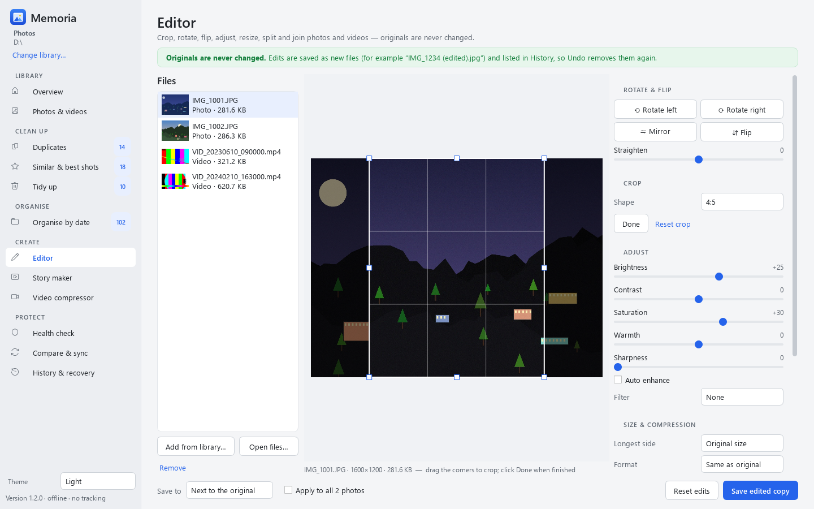
Cropping to 4:5 with adjustments applied.
Video tools
Tool
What it does
Trim
Drag the timeline to any moment and use Set start here / Set end here, or type the times. The resulting length is shown.
Split
Split at the playhead, into N equal parts, or every N seconds. Cuts are frame-accurate.
Join
Join every video in the list, in order, into one. Clips of different sizes or orientations are fitted to the first one (with black bars if needed); clips without sound get silence.
Rotate, flip, crop
Fix sideways phone videos, mirror, or crop to a shape such as 9:16 for stories.
Resolution (1080p, 720p, 480p) and quality (High, Balanced, Small). For a target size such as 16 MB use the Video compressor.
Save frame as photo
Saves the frame at the playhead as a full-resolution JPEG.
Every video result is checked before it is kept: it must play and have the expected length. If anything fails or you
cancel, no partial file is left behind.
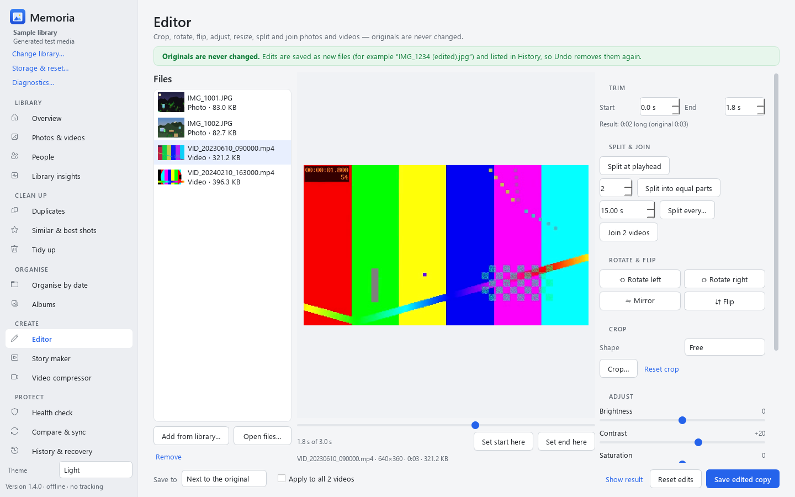
Trimming a video with the timeline.
Story maker
Turns photos into Instagram-ready images and videos on your PC.
Outputs
Output
Size
Options
Story images
1080 × 1920
Layouts: Single photo, Two photos (stacked), Three photos, Four-photo grid,
Before / after, Polaroid. Photos are split across as many stories as needed (e.g. "7 photos → 2 stories").
Carousel
1080 × 1350 (4:5) or 1080 × 1080
One slide per photo, or Split into seamless
slides to turn one wide panorama into 2–10 slides that join perfectly when swiped.
Story video
1080 × 1920 MP4
Seconds per photo, crossfade length, gentle zoom-and-pan
("Ken Burns") motion, optional music (faded out at the end).
Shared style options: background (blurred photo, black, white), photo fit (show the whole photo, or fill the frame with
a smart crop centred on the interesting part), caption text and position.
How to use
Tick photos on the left (search and month filter help), or send them from Photos & videos.
Drag in the Selected strip to change the order; Remove or Delete to drop one.
Pick an output and options — the Preview updates live.
Click Export. Files are saved to Pictures\Memoria Exports\Stories (change with Change…); use
Open folder to find them.
Your photos are only read. Photos rotated by the camera appear upright, and iPhone HEIC photos are supported.
With a library open, published outputs appear in History. Undo removes them only if their recorded fingerprints
still match. Cancelled story exports roll back the outputs created by that export.
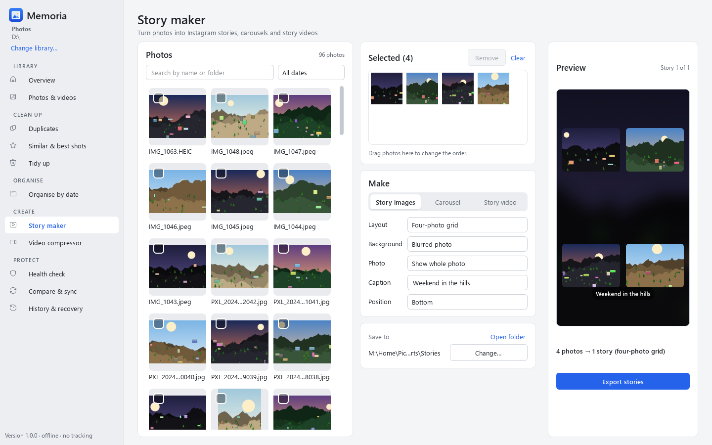
A four-photo grid story with a caption on a blurred
background.
Video compressor
Makes smaller copies of videos for WhatsApp, email or uploads. Originals are never changed.
The video list loads thumbnails only as rows become visible, avoiding an eager thumbnail pass over a large library.
Opening the page does not probe every video. Estimates are checked in the background for ticked videos, with bounded
pending work and incremental updates. Select all still selects the complete list, not just visible rows;
Select none stops submitting further estimate checks. Actual compression starts only when you click Compress.
Settings
Quality preset: High, Balanced (looks the same on a phone, much smaller) or Small.
Fit under a size: any size in MB, with shortcuts for 16 MB (WhatsApp), 25 MB (email) and 100 MB. Uses two passes
to land just under the target. If the target is impossibly small for the video's length, Memoria warns you.
Maximum resolution: keep original, 1080p, 720p or 480p (portrait videos are handled correctly).
Measure quality after compressing (SSIM): compares the copy to the original and reports a score with a plain
label — Excellent (≥ 0.98), Very good (≥ 0.95), Good (≥ 0.90) or Noticeable loss.
How to use
Tick videos from the library (or Add files from elsewhere…). The Estimated size column updates as you
change settings; "Already compact" means savings will be small.
Click Compress. Results list before → after, percentage saved, quality and status.
Every copy is checked: it must play, be the same length as the original and be smaller.
If not, the copy is discarded and the result says why. Copies are named <name> (compressed).mp4 and saved to
Pictures\Memoria Exports\Compressed videos by default.
Completed copies are journaled when a library is open, including those kept when a later item is cancelled.
Use History to undo them; changed or unverified copies are not deleted.
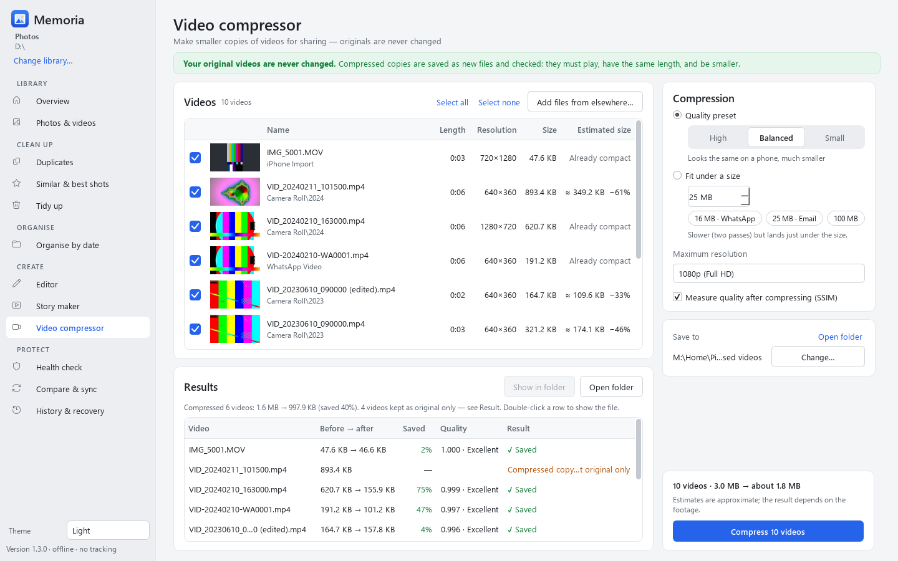
Results with savings and quality scores.
FFmpeg versus HandBrake
Memoria uses bundled FFmpeg with CPU libx264/H.264 + AAC, CRF presets or two-pass target-size encoding,
verification and optional SSIM. HandBrake is another transcoding application with software and hardware encoders
(official encoder list).
Both can use x264, so changing to HandBrake alone is not a guaranteed quality/size improvement.
HandBrakeCLI is not integrated in this version.
Health check
Checks files against earlier fingerprints and flags possible silent damage. A first fingerprint is a baseline,
not proof that an already-damaged original was healthy.
The first check records a fingerprint of every file (click Record fingerprints now).
Each later check re-reads every file and compares it with its fingerprint, and opens every photo to confirm it still
displays.
Result
Meaning
What to do
Intact
Content matches the fingerprint.
Nothing.
Newly fingerprinted
First check for this file.
Nothing.
Edited since last check
Size or modified time changed; the fingerprint is refreshed. This does not prove the change was intentional.
Check whether the change was expected.
Possibly damaged
Content changed without a size/time change. This can indicate damage or an edit that preserved timestamps.
Compare with a known-good backup and check the drive.
Can't be opened
Reading or decoding failed; this alone does not prove damage.
Check codec support, file access and a known-good backup before considering removal.
Missing
Not found at its last known path; retained across rescans with its metadata.
Check for an external move/deletion. Returning to the same path restores the catalogue identity.
A damaged file stays flagged on later checks until it is fixed. Double-click a row to show the file in Explorer.
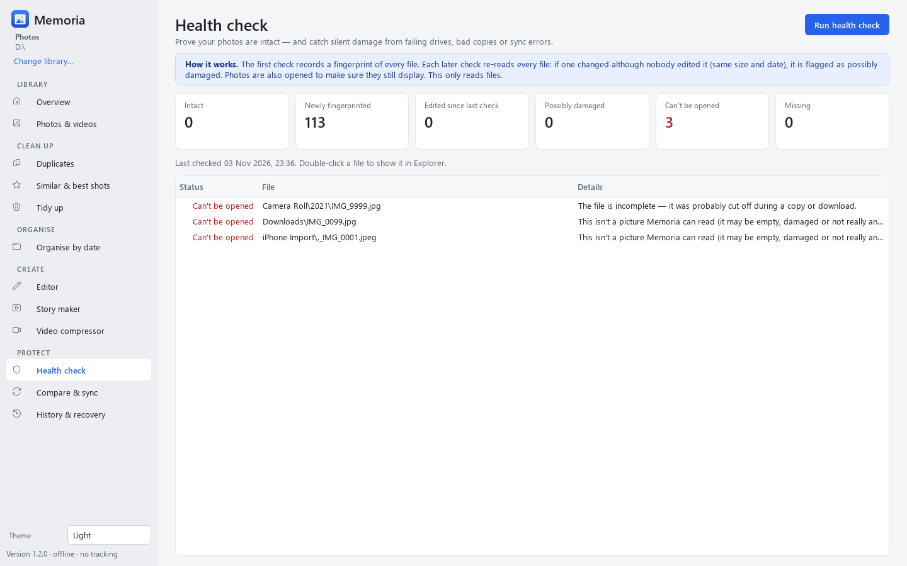
The generated sample includes intentionally unreadable files.
Compare & sync
Checks a backup drive, old laptop folder or any other folder against the library. Matching is by content, so renamed
or re-organised copies still count as backed up.
Choose the other folder (Browse…) and click Compare. The other folder is only read.
Tiles show files only in this library, only in the other folder, and in both.
Two tabs list what each side is missing, ticked by default.
Copy N files to other folder copies into the same sub-folders there; Copy N files into this library does the
reverse.
Each copy is written to a temporary file, checked byte for byte, then named. Existing files are never overwritten.
Undo removes only the copies made, and only if they are still unchanged.
An unavailable backup, unreadable subfolder or failed required hash stops comparison with an error; incomplete
results are not presented as a complete backup inventory.
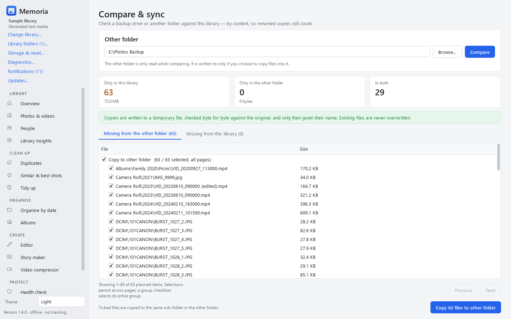
Content-based comparison against a generated partial backup.
History & recovery
History lists file-operation batches: when, what, how many files, size and status (Done, Partly done, Undone, or Recovery
emptied). Select one to see each step — what moved, from where, to where.
Undo this change puts files back where they were. If a file with that name has appeared in the meantime, the
restored file gets a new name. Copies are removed only if unchanged.
Recovery folder shows how many files and how much space it holds. Open Recovery folder opens it in Explorer.
Empty Recovery… permanently deletes the originals held there after acknowledgement. Those deletions cannot be
undone. Undo can separately remove unchanged generated copies. Deletion failures are reported, not silently counted as success.
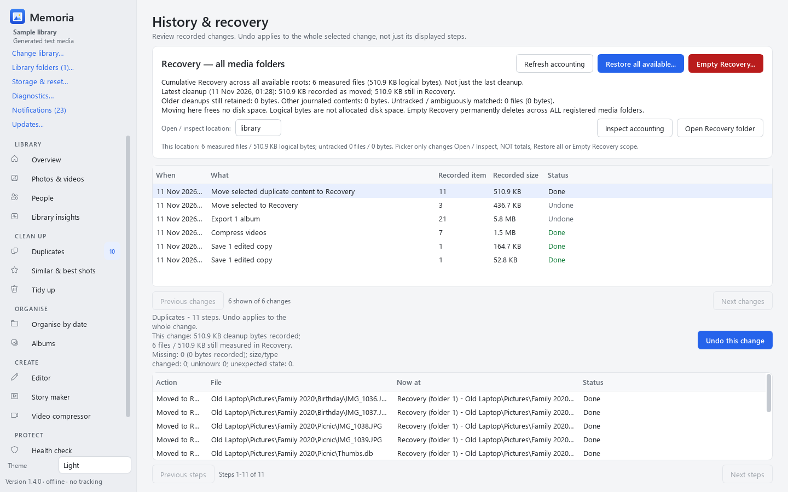
Every step of a change is listed with its
current location.
If Memoria is closed unexpectedly (crash or power cut) during a change, the next time you open the
library it checks which steps finished and records them in History, so the change can still be undone.
Storage & reset
Open it below the library name in the sidebar. For normal new/changed files, try F5 first.
Safe rebuild (soft): clear thumbnails, file analysis and similar-video caches, then re-index originals
in place. Albums, people/corrections, health fingerprints, missing records and duplicate keep choices remain.
Custom: choose individual categories. Clearing people, saved albums, health baselines, missing records or duplicate keep choices
requires acknowledgement and cannot be undone. Forgetting missing records also removes their album/face links.
Start fresh (hard): select all catalogue-data categories. Stable file identities, operation history,
original media, exports and Recovery remain. This is not deletion of the database folder.
Shrink storage files: optional compaction with a free-space check. Without it, cleared pages are reused
but the database files may not get smaller. No second copy of the media library is made.
Thumbnails/analysis rebuild now; run People, album suggestions, Health check or Similar videos separately when cleared.
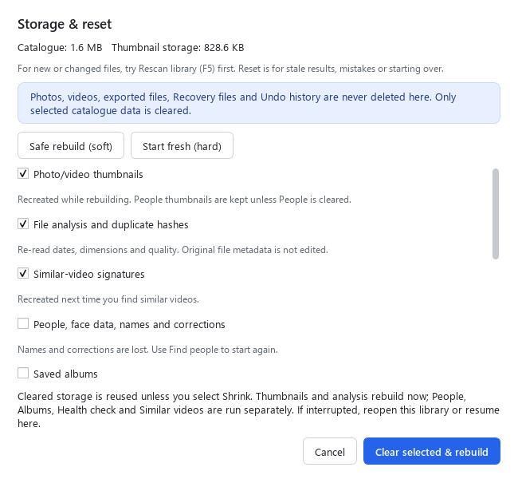
The safe default preserves personal catalogue organisation.
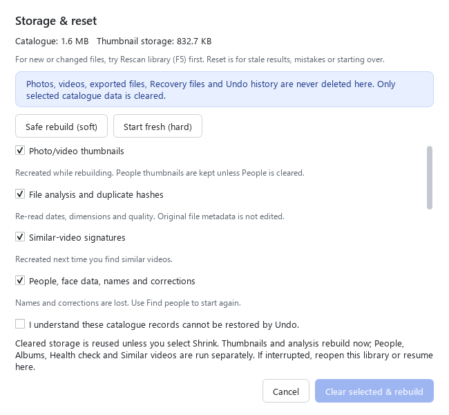
Personal-data clearing requires an explicit acknowledgement.
After cancellation, process termination or shutdown, reopening resumes unfinished phases without clearing personal
data twice. Other library actions pause until the reset completes. Resume rebuild can skip shrinking if space
is low. Cancelling pauses work; it does not restore metadata already approved for clearing.
Reset is not repair for an unreadable SQLite database or a damaged drive. Preserve
.memoria for recovery; deleting it also deletes Recovery files and Undo history. Keep a separate backup.
Progress & cancelling
Long file operations run in the background with a bar at the bottom of the window showing what is happening,
the percentage, the time elapsed and an estimate of the time left. Multi-step work (Check everything, Undo,
copying into the library) shows the step it is on. Cancel (or Esc) stops cleanly between files; anything already
done in a file-operation batch is journaled. Cancellation is cooperative and can wait for an active decode or atomic
database step. Insights has a separate read-only loading indicator. Reset follows the resumable behaviour above,
not normal Undo. One main task runs at a time to avoid conflicting file operations.
Local diagnostics
Open Diagnostics in the sidebar and opt in for this library on this device. Existing scanned/cached
metadata works immediately; no media rescan or reset is required. Previous timings cannot be recreated, but future
tasks, browsing and previews are measured, including a task running when you enable recording.
When using a source checkout, reports update under diagnostics\reports\report-<random>.json after
main tasks, approximately every minute, and on normal exit. The app does not stage, commit, upload or delete them.
Consent is stored in local settings, not in git. Another library/device requires its own opt-in.
The report includes aggregate counts/bytes, safe format/codec buckets, technical-metadata distributions and coverage,
fixed error categories, timings and basic system/process-memory data. It excludes media, filenames/paths, actual
capture dates, GPS coordinates, camera/person/album names, face vectors, file-content hashes and raw error traces.
CPU/memory exclude FFmpeg child processes and are not an isolated performance benchmark.
Aggregates can still reveal information about your collection/computer. Turn recording off
before editing or committing reports, review the JSON, and stage only the intended reports. Existing reports and git
history remain after disabling/resetting. Do not copy .memoria or raw logs into the repository.
Interrupted writes leave the previous complete snapshot intact. Reports may be partial during indexing or unavailable
when the catalogue/checkout cannot be read or written; failures are shown in Diagnostics. See the
report contents and sharing guide.
Notifications
Open Notifications below the library name. By default, desktop messages appear only while Memoria is
backgrounded or minimised. Viewing a photo or using a Memoria dialog counts as foreground, not as leaving the app.
Indexing or a catalogue rebuild finishes; unreadable items produce a warning instead of an unconditional success.
Utility results, cleanup, sync, album exports, edited copies, story exports and compressed videos are ready.
A task fails or some items fail/are skipped. A compression copy refused because it is not smaller is a
review-results warning, not a claim that the original was damaged.
Health check finds missing, unreadable or possibly damaged files.
A task is cancelled, indexing stops, or a rebuild is paused. Completed work is not automatically undone.
Turn categories on/off, or select background-only, always-desktop, in-app-only or off. Preferences are saved
locally for this device/user, across libraries. Turning notifications off does not suppress safety dialogs or Undo
toasts. The recent-event list retains at most 50 enabled events in memory; changing libraries, rebuilding the
window for a theme change or exiting clears it. It is not the persistent History & recovery journal.
Desktop text contains only generic messages and optional counts, never filenames, library paths/names, people,
locations or raw errors. Clicking a message brings the current Memoria window (or its open dialog) forward; it does
not perform a file operation or switch libraries. The tray menu also opens notification settings.
Windows notification/Focus Assist settings can suppress delivery. If tray messages are unsupported,
enabled events still appear in the sidebar's recent list. Closing Memoria exits it, rather than hiding it in the tray.
Offscreen automated tests verify routing with a fake tray, not actual Windows popup appearance.
Themes
Choose Match Windows, Light or Dark at the bottom of the sidebar. Match Windows follows your
Windows setting and switches automatically when it changes. Memoria keeps your library and page open when the theme
changes.
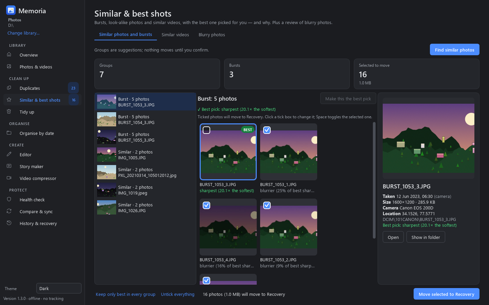
Dark theme.
Keyboard shortcuts
Keys
Action
Ctrl+1 … 0
Existing page shortcuts are unchanged: Ctrl+1 Overview, Ctrl+3 People, Ctrl+8 Albums, Ctrl+9 Editor, Ctrl+0 Story maker. Insights has no numbered shortcut.
F5
Rescan the library
Ctrl+O
Open another library
Ctrl+Z
Undo the last change (asks first)
Esc
Cancel the running task
Ctrl+F
Search (Photos & videos) — names, folders, cameras and people
Ctrl+A
Select all items on the current Photos page (up to 500), not unseen pages
Listed under Tidy up → Non-photo files; never moved automatically.
Sample / test library
The Try it on a sample library button (and tools\make_test_library.py) creates a realistic library of
generated photos — plus a few public-domain portraits of three 19th-century figures for People; no private people or
places — designed so that every tool has something to find:
Camera & phone folders
DCIM, Camera Roll, iPhone Import with EXIF dates, cameras and GPS.
A nested family album copied whole to "Old Laptop" (with a Thumbs.db), and a USB stick holding some Christmas photos.
People
Public-domain portraits of Abraham Lincoln, Mark Twain and Nikola Tesla (Wikimedia Commons) spread over two "boxes of scans", including one photo of two of them, two hard cases and one with no visible face.
Albums
Events in Delhi, Goa and Ladakh with GPS, a three-day trip, and named people.
Look-alikes
Five-frame bursts with one sharp frame; WhatsApp-style resized copies.
Blurry shots
Four heavily blurred photos.
Tricky dates
Dates only in file names; one scan with no date at all.
Problems
A truncated JPEG, empty files, junk files, empty folders, documents.
Formats
HEIC, PNG screenshots, EXIF-rotated portraits, MP4 and MOV videos.
Ground truth
expected.json lists what each tool should find.
FAQ
Does Memoria upload anything?
No. It has no account, no cloud features and no telemetry. FFmpeg, face recognition, place names and all analysis run
locally.
Where is face data kept, and how do I remove it?
In the library's own catalogue (.memoria), next to your photos. People → More → Forget all face data…
deletes every face, name and correction; your photos are not touched.
Can I delete the .memoria folder?
Do not delete it to reset the app: it contains Recovery, History, albums, faces and fingerprints.
Use Storage & reset instead. Keep the folder intact if the database cannot be opened.
Will Memoria change my photos' contents or metadata?
No. It moves files (Recovery, organise), copies files (sync) and creates new files (stories, compressed videos). It never
edits a photo or video in place.
Why wasn't a photo organised?
Its only date was the file's modified date, which is unreliable for copies. Tick "Also move files whose only date is the
file's modified date" if you're sure.
Why is a sharp photo listed as blurry?
Photos with large smooth areas (sky, fog, night) have little fine detail. That's why nothing on the Blurry tab is ticked
for you — try the "Only very blurry" sensitivity.
How do I get space back permanently?
After you're happy with a clean-up, use History & recovery → Empty Recovery….
Can I use Memoria on an external drive?
Yes. The catalogue and Recovery live on that drive, so they travel with it. If the drive is unplugged while
Memoria is scanning it, the scan stops rather than treating inaccessible entries as deleted. Reconnect and press F5;
check History for completed steps if the interruption happened during a file operation.
Can one library contain multiple independent folders or drives?
Not yet. A library includes one root and its subfolders. The Insights folder picker narrows that existing library;
it does not combine drives. Multi-folder libraries remain deferred.
Why does it say the library is already open?
Another Memoria window is using it. Only one window may work on a library at a time so changes can never collide.
 Memoria
Memoria